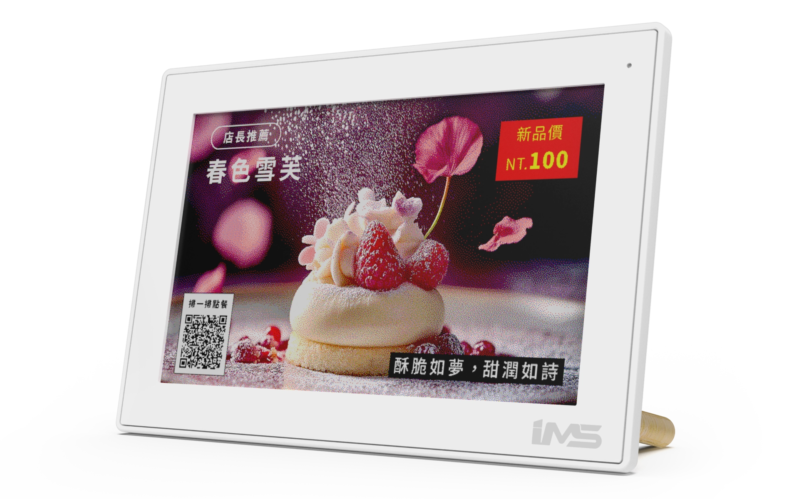
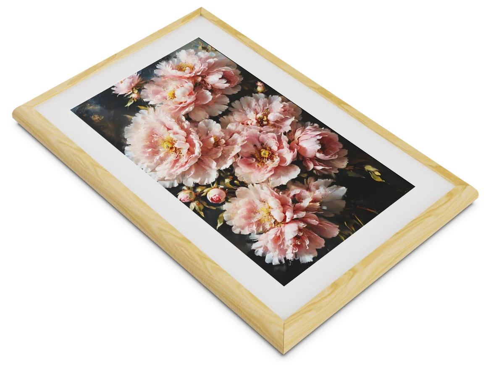
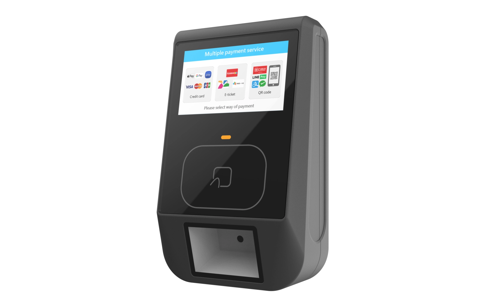
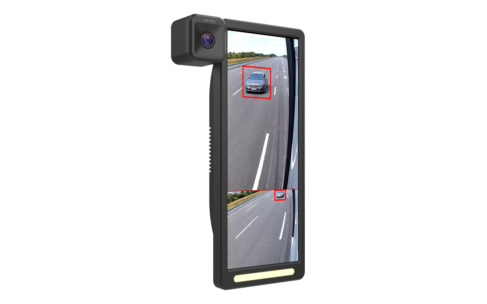
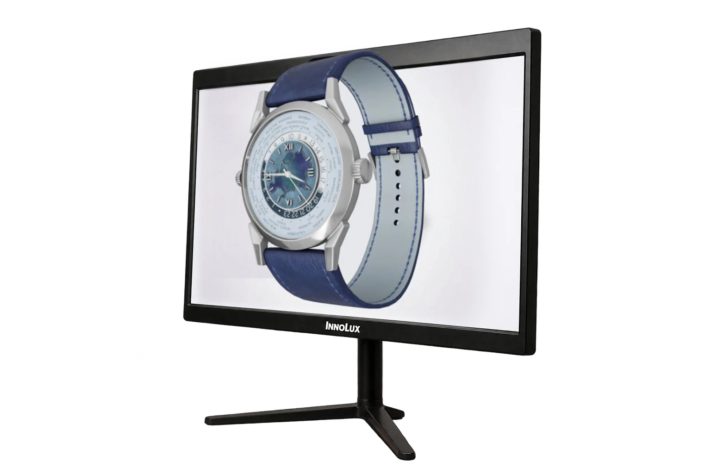
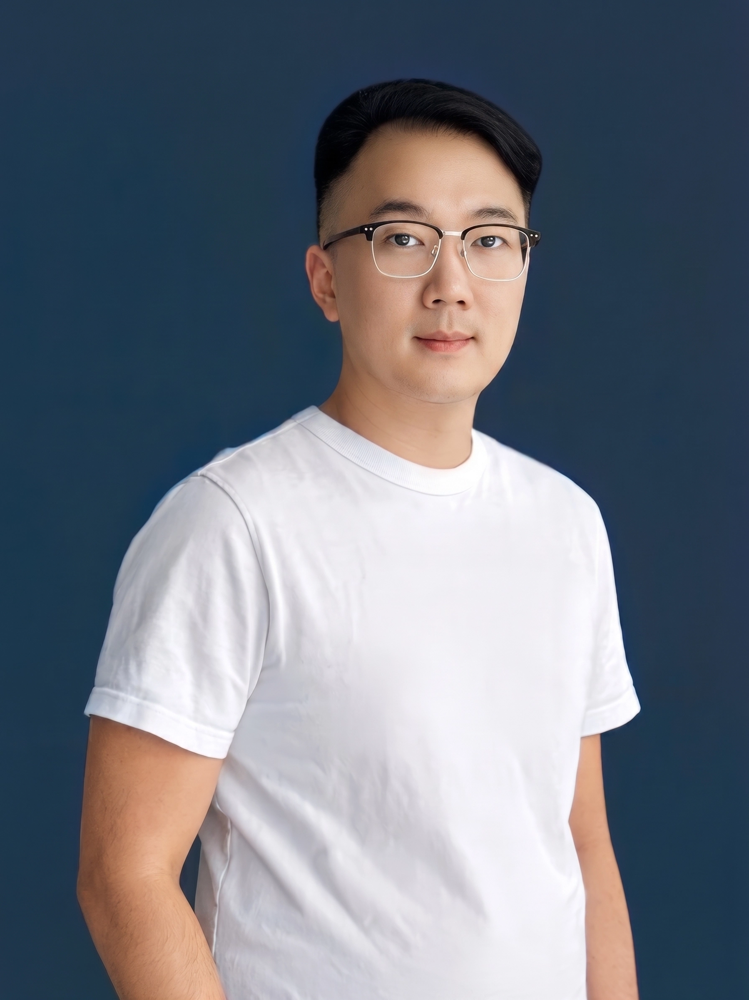
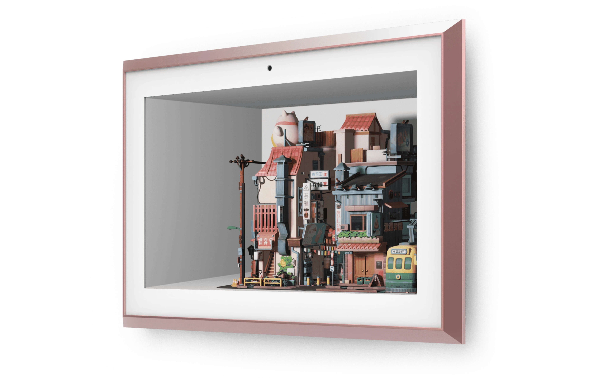
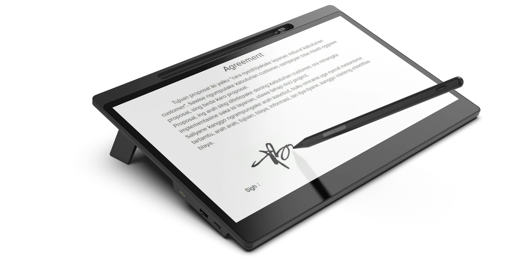
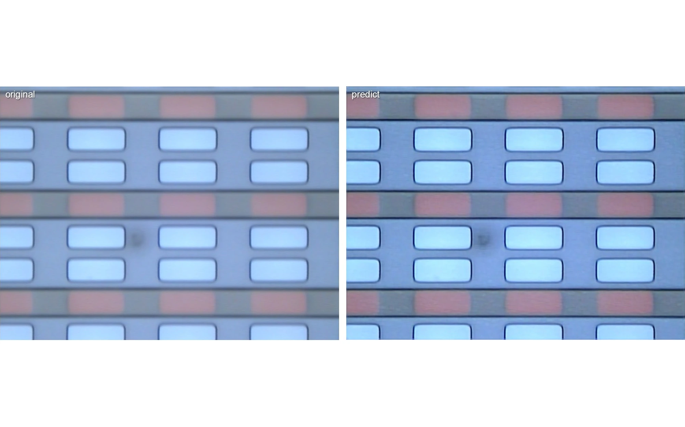
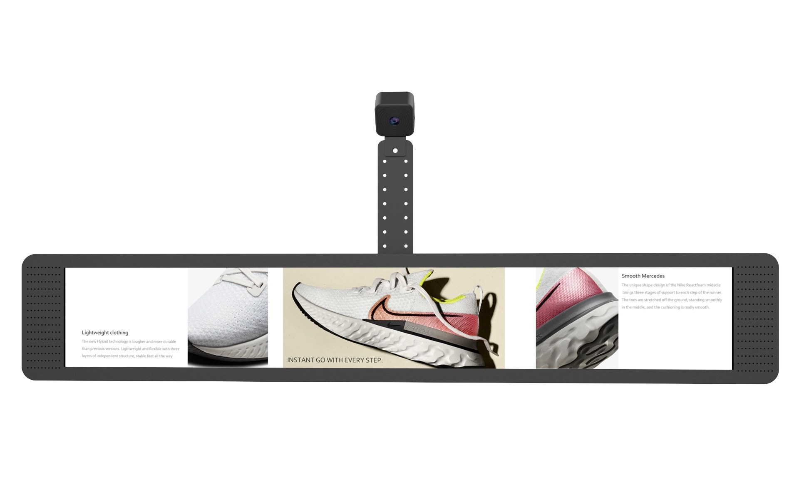

01 / 獨立開發
彩色電子紙桌面立牌
手機更新資訊，減少換紙。

顯示產品 · 軟硬整合原型開發
工業設計出身，從外觀機構一路做到電路、韌體與應用，在開模量產前用實機驗證可行性。
手機更新資訊，減少換紙。

隨環境光調整的類紙畫框，成功落地量產銷售。

開發範圍畫框端 Android App 開發、環境光感測硬體與韌體整合，並串接合作夥伴的雲端 CMS。
查看開發過程 →感應、掃碼與觸控整合。

開發範圍Android 平台 DTS 螢幕設定、I²C 觸控整合，以及工業與機構設計。
查看開發過程 →雙視角影像與 AI 輔助辨識。

開發範圍Linux RKNN 推論軟體、影像管線架構，以及工業與機構設計。
查看開發過程 →手機操控，追眼立體展示。

開發範圍PyQt 追蹤與介面串接、Three.js 網頁視差渲染，以及 GCP／Node.js 雲端服務開發。
查看開發過程 →將音樂與浮空影像，收進木質箱體。

開發範圍產品外觀與機構規劃、Android 播放端、手機 BLE 控制與軟硬體整合。
驗證進度機箱樣品與浮空光學驗證中，實機紀錄後續補齊。
讓角色如同駐立於透明艙體中。

開發範圍T113 與 SPI+RGB 面板整合、LVGL 播放器開發、按鍵控制與兩路亮度連動調節。
驗證進度LVGL 播放器已調通，正進行透光率與背光配比調校。

成大工設背景出身，深耕顯示產品、嵌入式系統與軟硬整合 16 年。核心優勢在於跨越工業設計、機構、電路打樣、嵌入式系統與跨端應用的鴻溝；擅長在缺乏完整供應鏈支持的前期階段，以高敏捷節奏獨立或帶領團隊在數週內交付 1:1 高保真可運作實體機，為新產品定義、客戶提案與展會展示提供最扎實的決策依據。
國立成功大學工業設計碩士 · 2010 年起投入前瞻顯示與軟硬整合開發

Rockchip RK3399 運算平台搭配 4K 高畫質面板，完成 DTS 螢幕時序配置與 I²C 觸控螢幕整合。

單傳輸線整合供電與視訊，配合磁吸收納與充電之人體工學機構設計。

針對工廠瑕疵檢測之失焦與震動問題，利用 CNN 去交錯與銳化前處理模型，協助後續瑕疵辨識。

針對新零售終端，採用 16:2.4 特殊比例與 1000 nits 高亮度面板；於 RK3399 平台整合邊緣 AI 物件辨識與多分割動態畫面呈現。